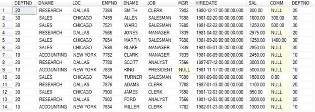
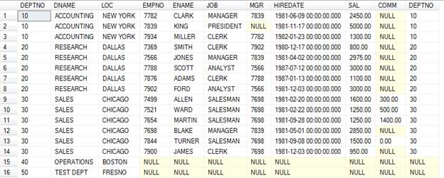

Day 3 Lesson Summary:
Data Types
We will refer to the SQL Server Data Types in the Day2 course. We will cover most frequently used data types.
Basics of Data Type
As we know, we use database to store different kinds of information. We distinguish each information type into a smaller entities like customers, orders, items etc. When storing details about each entity, we need to define fields on basis of what information we want to collect about each entity like first name, last name, date of birth etc. From our knowledge of entity, we can create table with defined fields. Each field is container and should constraint/define what kind of value it should allow to store. For example, first name should be alphanumeric, data of birth should be date, account# should be numeric etc. Alphanumeric, date and numeric are data types. What data type to use for a particular column is part of requirements gathering.
Most widely used data types are Int, Bit, Decimal, Numeric, Datetime, Date, NVarchar and Image.
SQL Joins
We already learnt about AND|OR clause in where clause to add more columns to filter data.
We will learn SQL Server terminology on writing joins.
So far we know how we can use joins when using more than one table in our FROM clause. This called INNER JOIN. Example:
select *
from dept d, emp e
where d.DEPTNO = e.DEPTNO
SQL Server specific:
select *
from dept d
join emp e on d.DEPTNO = e.DEPTNO
Let’s insert a new department in the DEPT table.
insert into dept values ( 50,'TEST DEPT','FRESNO');
IF you run above query, you should see

Where is our department 50?
When we want all the rows from left side table when there are 1 or no rows in the right side table, we have to use LEFT JOIN. Exampel:
select *
from dept d
left join emp e on d.DEPTNO = e.DEPTNO
Below is the result of the LEFT JOIN which shows that now we can see deptno 50 but since there is no emp data, we see NULL values present.

Now let’s modify address table in our dbtest. Make the PersonID nullable and insert following rows:
insert into address values (null,1,'abc ', 'test addr2','FRESNO','CA','93723');
insert into address values (1,2,'def', 'test addr2','FRESNO','CA','93723');
insert into address values (null,3,'ghi', 'test addr2','FRESNO','CA','93723');
Let’s run our query with join.
select *
from person p
join address a on p.PersonID = a.PersonID
You should see one row matching in both the tables.

To get all the rows from address table and show any person who has address, we need to use RIGHT JOIN like below.
select *
from person p
right join address a on p.PersonID = a.PersonID
Copy data from table to table
You can select data into a new table by using below syntax. This will create a new table based on columns you have selected.
SELECT *
INTO newtable [IN externaldb]
FROM table1;
SELECT column_name(s)
INTO newtable
FROM table1;
You can add where clause like
select * into dept_backup from dept where deptno = 20;
If you have existing table that you want data to be copied to:
INSERT INTO table2
SELECT * FROM table1;
INSERT INTO table2
(column_name(s))
SELECT column_name(s)
FROM table1;
What is transaction?
When you select, insert, update or delete data, SQL server provides Automicity, Consistency, Isolation and Durability.
Atomicity is an all-or-none proposition.
The atomicity property identifies that the transaction is atomic. An atomic transaction is either fully completed, or is not begun at all. Any updates that a transaction might affect on a system are completed in their entirety. If for any reason an error occurs and the transaction is unable to complete all of its steps, the then system is returned to the state it was in before the transaction was started. An example of an atomic transaction is an account transfer transaction. The money is removed from account A then placed into account B. If the system fails after removing the money from account A, then the transaction processing system will put the money back into account A, thus returning the system to its original state. This is known as a rollback.
Consistency guarantees that a transaction never leaves your database in a half-finished state. This is also applied during queries.
A transaction enforces consistency in the system state by ensuring that at the end of any transaction the system is in a valid state. If the transaction completes successfully, then all changes to the system will have been properly made, and the system will be in a valid state. If any error occurs in a transaction, then any changes already made will be automatically rolled back. This will return the system to its state before the transaction was started. Since the system was in a consistent state when the transaction was started, it will once again be in a consistent state.
Looking again at the account transfer system, the system is consistent if the total of all accounts is constant. If an error occurs and the money is removed from account A and not added to account B, then the total in all accounts would have changed. The system would no longer be consistent. By rolling back the removal from account A, the total will again be what it should be, and the system back in a consistent state.
Isolation keeps transactions separated from each other until they’re finished.
When a transaction runs in isolation, it appears to be the only action that the system is carrying out at one time. If there are two transactions that are both performing the same function and are running at the same time, transaction isolation will ensure that each transaction thinks it has exclusive use of the system. This is important in that as the transaction is being executed, the state of the system may not be consistent. The transaction ensures that the system remains consistent after the transaction ends, but during an individual transaction, this may not be the case. If a transaction was not running in isolation, it could access data from the system that may not be consistent. By providing transaction isolation, this is prevented from happening.
Durability guarantees that the database will keep track of pending changes in such a way that the server can recover from an abnormal termination.
A transaction is durable in that once it has been successfully completed, all of the changes it made to the system are permanent. There are safeguards that will prevent the loss of information, even in the case of system failure. By logging the steps that the transaction performs, the state of the system can be recreated even if the hardware itself has failed. The concept of durability allows the developer to know that a completed transaction is a permanent part of the system, regardless of what happens to the system later on.
Transaction management
Below is the example of how to manage your transaction. We will discuss in detail.
begin transaction
select * from dept;
insert into dept values (60,'NEW DEPT','LOS ANGELES');
select * from dept;
rollback transaction
select * from dept;
Update data
Delete data
SQL Functions
We will follow Microsoft SQL Server documentation. This way you have reference to where to find information in future.
https://msdn.microsoft.com/en-us/library/ms174318.aspx
Group by
Select from nothing (MSSQL/ORACLE)
Data Types
Constraints (beyond what we know)
QUIZ